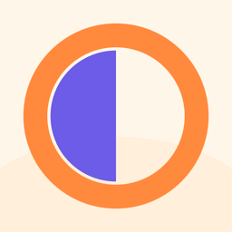

LogiDaily は、毎日0時に3問のロジックパズルが届く iOS アプリです。世界中のプレイヤーが同じ盤面に挑戦します。
ストリーク・Game Center ランキング・ウィジェット・過去7日のアーカイブで、毎日の習慣をサポートします。
不具合のご報告・ご要望・ご質問は、下記メールアドレスまでお気軽にご連絡ください。
よくある質問:
LogiDaily is an iOS app that delivers three logic puzzles every day at midnight. Players around the world all take on the same boards.
Streaks, Game Center leaderboards, widgets and a free archive of the past 7 days help you keep the habit going.
For bug reports, feature requests or questions, please email us at the address below.
FAQ: